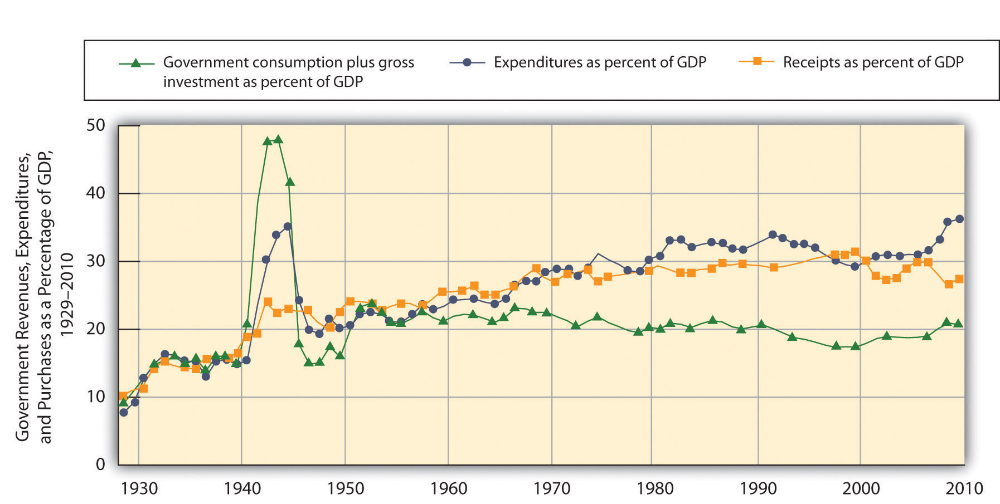
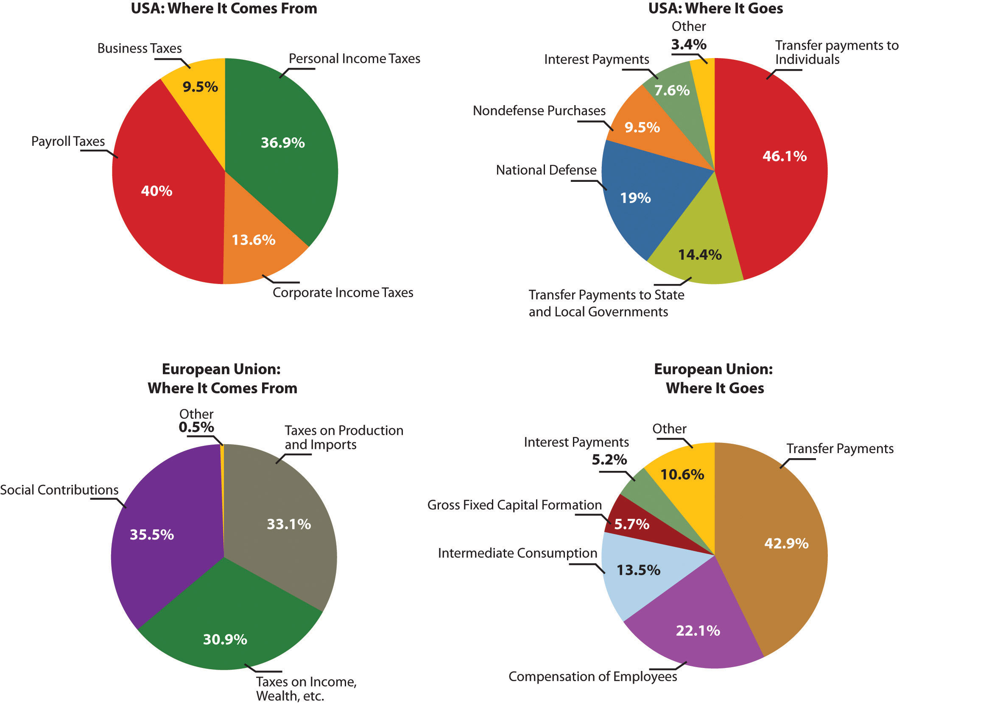
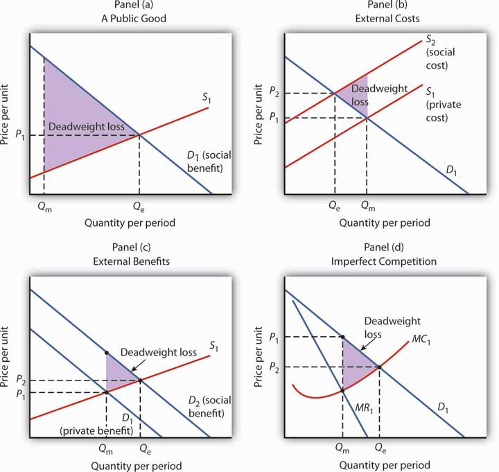
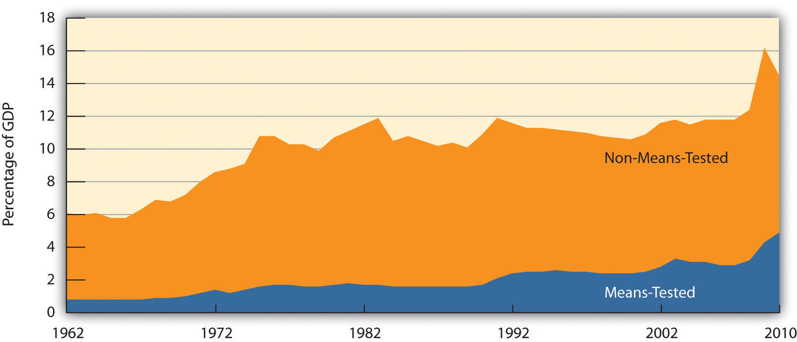

What do we want from our government? One answer is that we want a great deal more than we did several decades ago. The role of government has expanded dramatically in the last 80+ years. In 1929 (the year the Commerce Department began keeping annual data on macroeconomic performance in the United States), government expenditures at all levels (state, local, and federal) were less than 10% of the nation’s total output, which is called gross domestic product (GDP). In the current century, that share has more than tripled.
Figure 15.1 "Government Expenditures and Revenues as a Percentage of GDP" shows total government expenditures and revenues as a percentage of GDP from 1929 to 2010. All levels of government are included. Government expendituresAll spending by government agencies. include all spending by government agencies. Government revenuesAll funds received by government agencies. include all funds received by government agencies. The primary component of government revenues is taxes; revenue also includes miscellaneous receipts from fees, fines, and other sources. We will look at types of government revenues and expenditures later in this chapter.
Figure 15.1 Government Expenditures and Revenues as a Percentage of GDP
Government expenditures and revenues have risen dramatically as a percentage of GDP, the most widely used measure of economic activity, since 1929.
Source: U.S. Department of Commerce, Bureau of Economic Analysis, NIPA Tables 1.1.5 and 3.1.
Figure 15.1 "Government Expenditures and Revenues as a Percentage of GDP" also shows government purchases as a percentage of GDP. Government purchasesGoods or services purchased by a government agency. happen when a government agency purchases or produces a good or a service. We measure government purchases to suggest the opportunity cost of government. Whether a government agency purchases a good or service or produces it, factors of production are being used for public sector, rather than private sector, activities. A city police department’s purchase of new cars is an example of a government purchase. Spending for public education is another example.
Government expenditures and purchases are not equal because much government spending is not for the purchase of goods and services. The primary source of the gap is transfer paymentsPayments made by government agencies to individuals in the form of grants rather than in return for labor or other services., payments made by government agencies to individuals in the form of grants rather than in return for labor or other services. Transfer payments represent government expenditures but not government purchases. Governments engage in transfer payments in order to redistribute income from one group to another. The various welfare programs for low-income people are examples of transfer payments. Social Security is the largest transfer payment program in the United States. This program transfers income from people who are working (by taxing their pay) to people who have retired. Interest payments on government debt, which are also a form of expenditure, are another example of an expenditure that is not counted as a government purchase.
Several points about Figure 15.1 "Government Expenditures and Revenues as a Percentage of GDP" bear special attention. Note first the path of government purchases. Government purchases relative to GDP rose dramatically during World War II, then dropped back to about their prewar level almost immediately afterward. Government purchases rose again, though less sharply, during the Korean War. This time, however, they did not drop back very far after the war. It was during this period that military spending rose to meet the challenge posed by the former Soviet Union and other communist states—the “Cold War.” Government purchases have ranged between 17 and 23% of GDP ever since. The Vietnam War, the Persian Gulf War, and the wars in Afghanistan and Iraq did not have the impact on purchases that characterized World War II or even the Korean War. A second development, the widening gap between expenditures and purchases, has occurred since the 1960s. This reflects the growth of federal transfer programs, principally Social Security, programs to help people pay for health-care costs, and aid to low-income people. We will discuss these programs later in this chapter.
Finally, note the relationship between expenditures and receipts. When a government’s revenues equal its expenditures for a particular period, it has a balanced budgetSituation that occurs when a government’s revenues equal its expenditures for a particular period.. A budget surplusSituation that occurs when a government’s revenues exceed its expenditures. occurs if a government’s revenues exceed its expenditures, while a budget deficitSituation that occurs when government expenditures exceed revenues. exists if government expenditures exceed revenues.
Prior to 1980, revenues roughly matched expenditures for the public sector as a whole, except during World War II. But expenditures remained consistently higher than revenues between 1980 and 1996. The federal government generated very large deficits during this period, deficits that exceeded surpluses that typically occur at the state and local levels of government. The largest increases in spending came from Social Security and increased health-care spending at the federal level. Efforts by the federal government to reduce and ultimately eliminate its deficit, together with surpluses among state and local governments, put the combined budget for the public sector in surplus beginning in 1997. As of 1999, the Congressional Budget Office was predicting that increased federal revenues produced by a growing economy would continue to produce budget surpluses well into the twenty-first century.
That rather rosy forecast was set aside after September 11, 2001. Terrorist attacks on the United States and later on several other countries led to sharp and sustained increases in federal spending for wars in Afghanistan and Iraq, as well as expenditures for Homeland Security. The administration of George W. Bush proposed, and Congress approved, a tax cut. The combination of increased spending on the aforementioned items and others, as well as tax cuts, produced substantial deficits. The deficit grew markedly wider following the recession that began in December 2007. As incomes fell, tax receipts fell. Expenditures grew due to increased spending associated with the American Recovery and Reinvestment Act of 2009 designed to stimulate the economy. It included such things as extended unemployment compensation, increased assistance for the poor, and increased infrastructure spending.
The evidence presented in Figure 15.1 "Government Expenditures and Revenues as a Percentage of GDP" does not fully capture the rise in demand for public sector services. In addition to governments that spend more, people in the United States have clearly chosen governments that do more. The scope of regulatory activity conducted by governments at all levels, for example, has risen sharply in the last several decades. Regulations designed to prevent discrimination, to protect consumers, and to protect the environment are all part of the response to a rising demand for public services, as are federal programs in health care and education.
Figure 15.2 "Government Revenue Sources and Expenditures: 2009" summarizes the main revenue sources and types of expenditures for the U.S. federal government and for the European Union. In the United States, most revenues came from personal income taxes and from payroll taxes. Most expenditures were for transfer payments to individuals. Federal purchases were primarily for national defense; the “other purchases” category includes things such as spending for transportation projects and for the space program. Interest payments on the national debt and grants by the federal government to state and local governments were the other major expenditures. The situation in the European Union differs primarily by the fact that a greater share of revenue comes from taxes on production and imports and substantially less is spent on defense.
Figure 15.2 Government Revenue Sources and Expenditures: 2009
The four panels show the sources of government revenues and the shares of expenditures on various activities for all levels of government in the United States and the European Union in 2009.
Sources: Survey of Current Business, August 2011, Tables 3.2 and 3.10.5; Laurent Freysson, “General Government Expenditure Trends 2005–2010,” Eurostat Statistics in Focus 42 (2011); Laura Wahrig, “Tax Revenue in the European Union,” Eurostat Statistics in Focus 26 (2011).
To understand the role of government, it will be useful to distinguish four broad types of government involvement in the economy. First, the government attempts to respond to market failures to allocate resources efficiently. In a particular market, efficiency means that the quantity produced is determined by the intersection of a demand curve that reflects all the benefits of consuming a particular good or service and a supply curve that reflects the opportunity costs of producing it. Second, government agencies act to encourage or discourage the consumption of certain goods and services. The prohibition of drugs such as heroin and cocaine is an example of government seeking to discourage consumption of these drugs. Third, the government redistributes income through programs such as welfare and Social Security. Fourth, the government can use its spending and tax policies to influence the level of economic activity and the price level.
We will examine the first three of these aspects of government involvement in the economy in this chapter. The fourth, efforts to influence the level of economic activity and the price level, fall within the province of macroeconomics.
In an earlier chapter on markets and efficiency, we learned that a market maximizes net benefit by achieving a level of output at which marginal benefit equals marginal cost. That is the efficient solution. In most cases, we expect that markets will come close to achieving this result—that is the important lesson of Adam Smith’s idea of the market as an invisible hand, guiding the economy’s scarce factors of production to their best uses. That is not always the case, however.
We have studied several situations in which markets are unlikely to achieve efficient solutions. In an earlier chapter, we saw that private markets are likely to produce less than the efficient quantities of public goods such as national defense. They may produce too much of goods that generate external costs and too little of goods that generate external benefits. In cases of imperfect competition, we have seen that the market’s output of goods and services is likely to fall short of the efficient level. In all these cases, it is possible that government intervention will move production levels closer to their efficient quantities. In the next three sections, we shall review how a government could improve efficiency in the cases of public goods, external costs and benefits, and imperfect competition.
A public good is a good or service for which exclusion is prohibitively costly and for which the marginal cost of adding another consumer is zero. National defense, law enforcement, and generally available knowledge are examples of public goods.
The difficulty posed by a public good is that, once it is produced, it is freely available to everyone. No consumer can be excluded from consumption of the good on grounds that he or she has not paid for it. Consequently, each consumer has an incentive to be a free rider in consuming the good, and the firms providing a public good do not get a signal from consumers that reflects their benefit of consuming the good.
Certainly we can expect some benefits of a public good to be revealed in the market. If the government did not provide national defense, for example, we would expect some defense to be produced, and some people would contribute to its production. But because free-riding behavior will be common, the market’s production of public goods will fall short of the efficient level.
The theory of public goods is an important argument for government involvement in the economy. Government agencies may either produce public goods themselves, as do local police departments, or pay private firms to produce them, as is the case with many government-sponsored research efforts. An important debate in the provision of public education revolves around the question of whether education should be produced by the government, as is the case with traditional public schools, or purchased by the government, as is done in charter schools.
External costs are imposed when an action by one person or firm harms another, outside of any market exchange. The social costThe private cost of producing a good or service plus the external cost of producing it. of producing a good or service equals the private cost plus the external cost of producing it. In the case of external costs, private costs are less than social costs.
Similarly, external benefits are created when an action by one person or firm benefits another, outside of any market exchange. The social benefitThe private benefit of a good revealed in the market plus external benefits. of an activity equals the private benefit revealed in the market plus external benefits. When an activity creates external benefits, its social benefit will be greater than its private benefit.
The lack of a market transaction means that the person or firm responsible for the external cost or benefit does not face the full cost or benefit of the choice involved. We expect markets to produce more than the efficient quantity of goods or services that generate external costs and less than the efficient quantity of goods or services that generate external benefits.
Consider the case of firms that produce memory chips for computers. The production of these chips generates water pollution. The cost of this pollution is an external cost; the firms that generate it do not face it. These firms thus face some, but not all, of the costs of their production choices. We can expect the market price of chips to be lower, and the quantity produced greater, than the efficient level.
Inoculations against infectious diseases create external benefits. A person getting a flu shot, for example, receives private benefits; he or she is less likely to get the flu. But there will be external benefits as well: Other people will also be less likely to get the flu because the person getting the shot is less likely to have the flu. Because this latter benefit is external, the social benefit of flu shots exceeds the private benefit, and the market is likely to produce less than the efficient quantity of flu shots. Public, private, and charter schools often require such inoculations in an effort to get around the problem of external benefits.
In a perfectly competitive market, price equals marginal cost. If competition is imperfect, however, individual firms face downward-sloping demand curves and will charge prices greater than marginal cost. Consumers in such markets will be faced by prices that exceed marginal cost, and the allocation of resources will be inefficient.
An imperfectly competitive private market will produce less of a good than is efficient. As we saw in the chapter on monopoly, government agencies seek to prohibit monopoly in most markets and to regulate the prices charged by those monopolies that are permitted. Government policy toward monopoly is discussed more fully in a later chapter.
In each of the models of market failure we have reviewed here—public goods, external costs and benefits, and imperfect competition—the market may fail to achieve the efficient result. There is a potential for government intervention to move inefficient markets closer to the efficient solution.
Figure 15.3 "Correcting Market Failure" reviews the potential gain from government intervention in cases of market failure. In each case, the potential gain is the deadweight loss resulting from market failure; government intervention may prevent or limit this deadweight loss. In each panel, the deadweight loss resulting from market failure is shown as a shaded triangle.
Figure 15.3 Correcting Market Failure
In each panel, the potential gain from government intervention to correct market failure is shown by the deadweight loss avoided, as given by the shaded triangle. In Panel (a), we assume that a private market produces Qm units of a public good. The efficient level, Qe, is defined by the intersection of the demand curve D1 for the public good and the supply curve S1. Panel (b) shows that if the production of a good generates an external cost, the supply curve S1 reflects only the private cost of the good. The market will produce Qm units of the good at price P1. If the public sector finds a way to confront producers with the social cost of their production, then the supply curve shifts to S2, and production falls to the efficient level Qe. Notice that this intervention results in a higher price, P2, which confronts consumers with the real cost of producing the good. Panel (c) shows the case of a good that generates external benefits. Purchasers of the good base their choices on the private benefit, and the market demand curve is D1. The market quantity is Qm. This is less than the efficient quantity, Qe, which can be achieved if the activity that generates external benefits is subsidized. That would shift the market demand curve to D2, which intersects the market supply curve at the efficient quantity. Finally, Panel (d) shows the case of a monopoly firm that produces Qm units and charges a price P1. The efficient level of output, Qe, could be achieved by imposing a price ceiling at P2. As is the case in each of the other panels, the potential gain from such a policy is the elimination of the deadweight loss shown as the shaded area in the exhibit.
Panel (a) of Figure 15.3 "Correcting Market Failure" illustrates the case of a public good. The market will produce some of the public good; suppose it produces the quantity Qm. But the demand curve that reflects the social benefits of the public good, D1, intersects the supply curve at Qe; that is the efficient quantity of the good. Public sector provision of a public good may move the quantity closer to the efficient level.
Panel (b) shows a good that generates external costs. Absent government intervention, these costs will not be reflected in the market solution. The supply curve, S1, will be based only on the private costs associated with the good. The market will produce Qm units of the good at a price P1. If the government were to confront producers with the external cost of the good, perhaps with a tax on the activity that creates the cost, the supply curve would shift to S2 and reflect the social cost of the good. The quantity would fall to the efficient level, Qe, and the price would rise to P2.
Panel (c) gives the case of a good that generates external benefits. The demand curve revealed in the market, D1, reflects only the private benefits of the good. Incorporating the external benefits of the good gives us the demand curve D2 that reflects the social benefit of the good. The market’s output of Qm units of the good falls short of the efficient level Qe. The government may seek to move the market solution toward the efficient level through subsidies or other measures to encourage the activity that creates the external benefit.
Finally, Panel (d) shows the case of imperfect competition. A firm facing a downward-sloping demand curve such as D1 will select the output Qm at which the marginal cost curve MC1 intersects the marginal revenue curve MR1. The government may seek to move the solution closer to the efficient level, defined by the intersection of the marginal cost and demand curves.
While it is important to recognize the potential gains from government intervention to correct market failure, we must recognize the difficulties inherent in such efforts. Government officials may lack the information they need to select the efficient solution. Even if they have the information, they may have goals other than the efficient allocation of resources. Each instance of government intervention involves an interaction with utility-maximizing consumers and profit-maximizing firms, none of whom can be assumed to be passive participants in the process. So, while the potential exists for improved resource allocation in cases of market failure, government intervention may not always achieve it.
The late George Stigler, winner of the Nobel Prize for economics in 1982, once remarked that people who advocate government intervention to correct every case of market failure reminded him of the judge at an amateur singing contest who, upon hearing the first contestant, awarded first prize to the second. Stigler’s point was that even though the market is often an inefficient allocator of resources, so is the government likely to be. Government may improve on what the market does; it can also make it worse. The choice between the market’s allocation and an allocation with government intervention is always a choice between imperfect alternatives. We will examine the nature of public sector choices later in this chapter and explore an economic explanation of why government intervention may fail to move market solutions closer to their efficient levels.
The growing field of behavioral economicsAn area of economics that draws on psychology and neuroscience to understand how and why individuals make decisions.—an area of economics that draws on psychology and neuroscience to understand how and why individuals make decisions—has led to consideration of new areas for government policy. Using experiments and surveys, behavioral economists have found that people’s decisions are subject to cognitive limitations and biases, as well as to emotions, resulting in seemingly irrational choices. The information in this section is based largely on Richard H. Thaler and Sendhil Mullainathan, “Behavioral Economics” Concise Encyclopedia of Economics 2011 at http://www.econlib.org and Ian M. McDonald, “For the Student: Behavioral Economics,” Australian Economic Review 41(2) (2008): 222–228.
For example, 1955 Nobel Prize–winning economist Herbert Simon noted that people possess neither unlimited abilities nor unlimited time for processing information and hence may not solve all problems optimally. Instead they may resort to rules of thumb. They are being rational but their rationality is “bounded.” For example, a rule of thumb such as “you get what you pay for” may lead people to pay more for something when the cheaper version is just as good or better.
Behavioral economics has also found that people have bounded willpower (i.e., that they lack complete self-control and have a bias toward the present). Surprising? Hardly. Some people may eat, drink, or spend too much or exercise, save, or work too little. They may even be aware of their self-control problems and try to counter them. For example, they may choose to buy cigarettes by the pack instead of by the carton, which is cheaper; they may make New Year’s resolutions; they may have more of their salaries withheld than necessary in order to be sure they will get a tax refund so they can purchase goods they do not have the willpower to save for on their own.
Other findings suggest overconfidence (surveys show that 90% of people think they are among the top 50% in such areas as driving ability and health); loss aversion (getting extreme utility loss from negative outcomes that fall below a reference point and only mild utility increases from gains above the reference point); and over-reaction or under-reaction to information. Moreover, their errors persist—always thinking of themselves as above average in various areas despite evidence to the contrary and always putting off changes in behavior that they know would make them better off.
How might government policy be changed to help people make better decisions? One concrete proposal is for government to mandate that when employees become eligible for joining retirement plans, the default option would be signing them up instead of the more common approach of inviting them to do so. Though they could still opt out, studies have shown that a switch in the default option greatly increases participation in retirement plans. The change appears to reduce procrastination. The policy could be improved further by taking into account the notion of loss aversion. Building on studies that have shown that people are overly reluctant to sell stocks that have gone down in price because they do not want to have to admit the loss to themselves, Richard Thaler has suggested that employers not only switch the retirement plan default but additionally sign employees up for a plan that automatically increases their contribution rates, timed to coincide with any increases in salary they may be receiving. Never seeing a reduction in take-home pay, the employee avoids facing loss aversion.
But are people really being irrational? Perhaps an excess of optimism is good for mental health even if it leads one to make mistakes. Focusing on the present may beat out worrying about the future. Even if people are at times irrational, to what extent should government get involved? Most countries seem to have accepted that imposing speed limits and seat belt use is appropriate. Should sugary soft drinks be banned or at least taxed? Should government simply alert citizens to sign up for retirement plans or mandate companies to make signing up the default option?
To what extent should the model of homo economicus be altered to better understand economic outcomes? Will the extra dose of reality in looking at the way people make decisions contribute to or detract from the ability of economists to understand or explain economic outcomes? With the advent of new methods of testing, such as brain studies, these questions are likely to take center stage in coming years, both within and outside of the economics profession.
The proposition that a private market will allocate resources efficiently if the efficiency condition is met always comes with a qualification: the allocation of resources will be efficient given the initial distribution of income. If 5% of the people receive 95% of the income, it might be efficient to allocate roughly 95% of the goods and services produced to them. But many people (at least 95% of them!) might argue that such a distribution of income is undesirable and that the allocation of resources that emerges from it is undesirable as well.
There are several reasons to believe that the distribution of income generated by a private economy might not be satisfactory. For example, the incomes people earn are in part due to luck. Much income results from inherited wealth and thus depends on the family into which one happens to have been born. Likewise, talent is distributed in unequal measure. Many people suffer handicaps that limit their earning potential. Changes in demand and supply can produce huge changes in the values—and the incomes—the market assigns to particular skills. Given all this, many people argue that incomes should not be determined solely by the marketplace.
A more fundamental reason for concern about income distribution is that people care about the welfare of others. People with higher incomes often have a desire to help people with lower incomes. This preference is demonstrated in voluntary contributions to charity and in support of government programs to redistribute income.
A public goods argument can be made for government programs that redistribute income. Suppose that people of all income levels feel better off knowing that financial assistance is being provided to the poor and that they experience this sense of well-being whether or not they are the ones who provide the assistance. In this case, helping the poor is a public good. When the poor are better off, other people feel better off; this benefit is nonexclusive. One could thus argue that leaving private charity to the marketplace is inefficient and that the government should participate in income redistribution. Whatever the underlying basis for redistribution, it certainly occurs. The governments of every country in the world make some effort to redistribute income.
Experiments conducted by behavioral economists also provide insights into notions of fairness. In various versions of the “ultimatum game,” experimenters tell one player in the game to propose to give a share of an amount of money (say $10) to the other player. If the other player accepts the offer, both players keep their shares of the total. If the other player refuses the offer, both walk away with nothing.
If the responding player were selfish, he or she would accept any positive offer, and a selfish proposer would offer only a small amount, perhaps a penny or a nickel. In actual experiments, though, proposing players tend to offer about 40% of the total ($4 in this example) and responding players tend to reject offers of less than 20% ($2 in this example). The conclusion seems to hold even when substantial sums of money are used to play the game. Rejecting any offer that leaves both players better off seems irrational and suggests a concern for fairness.
Programs to redistribute income can be divided into two categories. One transfers income to poor people; the other transfers income based on some other criterion. A means-tested transfer paymentTransfer payment for which the recipient qualifies on the basis of income. is one for which the recipient qualifies on the basis of income; means-tested programs transfer income from people who have more to people who have less. The largest means-tested program in the United States is Medicaid, which provides health care to the poor. Other means-tested programs include Temporary Assistance to Needy Families (TANF) and food stamps. A non-means-tested transfer paymentTransfer payment for which income is not a qualifying factor. is one for which income is not a qualifying factor. Social Security, a program that taxes workers and their employers and transfers this money to retired workers, is the largest non-means-tested transfer program. Indeed, it is the largest transfer program in the United States. It transfers income from working families to retired families. Given that retired families are, on average, wealthier than working families, Social Security is a somewhat regressive program. Other non-means tested transfer programs include Medicare, unemployment compensation, and programs that aid farmers.
Figure 15.4 "Federal Transfer Payment Spending" shows federal spending on means-tested and non-means-tested programs as a percentage of GDP, the total value of output, since 1962. As the chart suggests, the bulk of income redistribution efforts in the United States are non-means-tested programs.
Figure 15.4 Federal Transfer Payment Spending
The chart shows federal means-tested and non-means-tested transfer payment spending as a percentage of GDP from 1962–2010.
Source: Congressional Budget Office, The Budget and Economic Outlook: Fiscal Years 2004–2013 (January 2003), Table F-10 for 1962–2002; thereafter Congressional Budget Office, The Budget and Economic Outlook: Fiscal Years 2011 to 2021 (January 2011), Table E-10 with means-tested as medicaid plus income security and non-means-tested everything else.
The fact that most transfer payments in the United States are not means-tested leads to something of a paradox: some transfer payments involve taxing people whose incomes are relatively low to give to people whose incomes are relatively high. Social Security, for example, transfers income from people who are working to people who have retired. But many retired people enjoy higher incomes than working people in the United States. Aid to farmers, another form of non-means-tested payments, transfers income to farmers, who on average are wealthier than the rest of the population. These situations have come about because of policy decisions, which we discuss later in the chapter.
Here is a list of actual and proposed government programs. Each is a response to one of the justifications for government activity described in the text: correction of market failure (due to public goods, external costs, external benefits, or imperfect competition); encouragement or discouragement of consumption due to consumers not making rational choices; and redistribution of income. In each case, identify the source of demand for the activity described.
Smokers impose tremendous costs on themselves. Based solely on the degree to which smoking shortens their life expectancy, the cost per pack of cigarettes is estimated to be $35.64. That cost, of course, is a private cost. In addition to that private cost, smokers impose costs on others. Those external costs come in three ways. First, they increase health care costs and thus increase health insurance premiums. Second, smoking causes fires that destroy property. Third, other people die each year as a result of secondhand smoke. Various estimates of these external costs put them at about $.40 per pack. If a tax were to be based solely on external effects, one would also need to recognize that smokers also generate external benefits. They contribute to retirement programs and to Social Security and then die sooner than nonsmokers. They thus subsidize the retirement programs of the rest of the population. So from the perspective of externalities, the optimal tax would be less than $.40 per pack.
Cigarette taxes, though, are much higher than that. Should they be? Is that fair? One rationale is simply that “sin” taxes are a source of government revenue. Economists Jonathan Gruber and Botond Koszegi suggest something else—that an excise tax on cigarettes of as much as $4.76 per pack may actually improve the welfare of smokers. Smokers, they argue, are “time-inconsistent.” Lacking self-control or willpower, they seek the immediate gratification of a cigarette and then regret their decisions later. Higher taxes would serve to reduce the quantity of cigarettes demanded and thus reduce behavior smokers would otherwise regret. Their argument is that smokers impose “internalities” on themselves and that higher taxes would reduce this.
Where does this lead us? If smokers are “rationally addicted” to smoking (i.e., they have weighed the benefits and costs of smoking and have chosen to smoke), then the only program for public policy is to design a tax that takes into account the net external costs of smoking. Current excise taxes on cigarettes seem to more than accomplish that. But if the decision to smoke is an irrational one, welfare may be improved by higher excise taxes on smoking.
In a study titled, “Do Cigarette Taxes Make Smokers Happier,” Gruber and Sendhil Mullainathan used self-reported happiness measures and variations in cigarette excise taxes across states to see the effect of excise taxes on happiness of people who have a propensity to smoke. They found that people with a propensity to smoke were significantly happier with higher cigarette excise taxes. This finding, they argue, is more consistent with a model based on bounded willpower and time inconsistency than one based on rational addiction.
Sources: Jonathan Gruber and Botond Koszegi, “Tax Incidence When Individuals Are Time-Inconsistent: The Case of Cigarette Excise Taxes,” Journal of Public Economics 88 (2004); 1959–1987; Jonathan H. Gruber and Sendhil Mullainathan, “Do Cigarette Taxes Make Smokers Happier?” Journal of Economic Analysis and Policy: Advances in Economic Policy 5:1 (2005): 1–45.